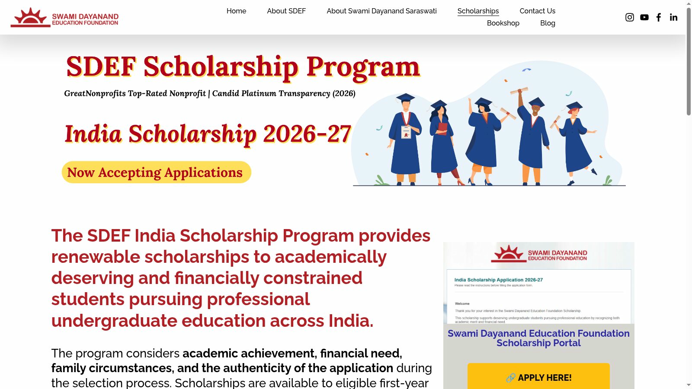
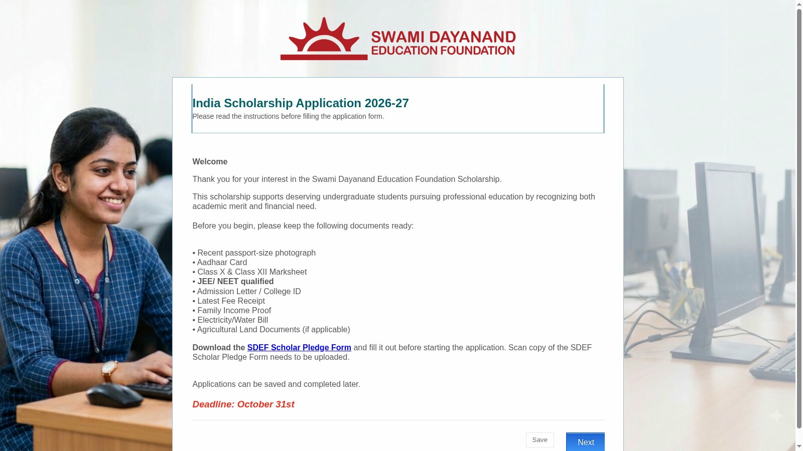

SDEF India Scholarship 2026-27: up to Rs 50,000 a year for professional degree students
First-year students in professional undergraduate programmes such as engineering, MBBS, BDS, nursing, pharmacy, architecture and veterinary science can apply for the Swami Dayanand Education Foundation (SDEF) India Scholarship 2026-27. The award is up to Rs 50,000 per year, renewable for up to four years, and applications close on Saturday, 31 October 2026 on the foundation's own scholarship portal.
Who can apply
- First-year full-time undergraduate students in a professional programme in India for 2026-27.
- Eligible programmes: B.Tech or B.E., MBBS, BDS, B.Sc Nursing or B.Nursing, B.Pharm or Pharm.D, B.Arch, and BVSc and AH.
- Minimum 80% marks or equivalent CGPA in Class 12.
- Entrance requirement where applicable: JEE Main All India Rank 50,000 or better, JEE Advanced AIR 40,000 or better, NEET UG AIR 50,000 or better, or NATA 100 marks or more. Other eligible programmes need the relevant recognized entrance qualification.
- Annual family income of Rs 12,00,000 or less from all sources.
- Shortlisted applicants take part in an aptitude assessment and further selection stages.
Amount and how it is paid
- Up to Rs 50,000 per academic year, renewable annually for up to four years, a total of up to Rs 2,00,000.
- Renewal depends on continued eligibility and academic performance.
- Funds go directly to the student's college or university account towards approved educational expenses. They are not paid into personal bank accounts.
Key dates
- Applications opened: 15 August 2026.
- Deadline: Saturday, 31 October 2026.
- Award notifications: mid November 2026.
- Funding begins: January 2027.
Before you apply: the Scholar Pledge
Both fresh and renewal applicants must download the SDEF Scholar Pledge from the scholarship page, sign it, and upload a scanned copy with the application. The foundation asks applicants to have the signed pledge ready before starting the form.
How to apply: step by step
From the official Applicant Handbook and the live application form, checked 22 October 2026.
- Start from the official India Scholarships 2026-27 page on swamidayanand.org and open the scholarship portal with the "APPLY HERE" button. Fresh applicants use the Fresh application link; renewals have a separate link on the same page.
- Welcome and eligibility: read the welcome page, keep the listed documents ready, and download, sign and scan the SDEF Scholar Pledge before you begin.
- Fill the form's nine sections in order: Welcome and Eligibility; Personal Details; College Details; Academics; Academic Achievements; Family details, Income and Occupation; Financial Information; Documents Upload; and Declaration and Submit.
- Documents the form asks for: recent passport-size photograph, Aadhaar card, Class 10 and Class 12 marksheets, JEE or NEET qualification proof, admission letter or college ID, latest fee receipt, family income proof, electricity or water bill, agricultural land documents if applicable, and the signed Scholar Pledge.
- You can save the application and finish it later. A submitted application cannot be edited: review every section, complete the human-verification and signature steps, then click Submit.


Later sections collect personal, academic and family details and document uploads; the Applicant Handbook walks through each of the nine sections with tips.
Video guides
The foundation's own YouTube channel carries an official English walkthrough for this cycle: SDEF India Scholarship 2026-27 - How to Apply, Eligibility and Important Details (checked 22 October 2026). We could not find an official Malayalam application video for this scheme on the foundation's channel; the walkthrough video and the Applicant Handbook are in English and Hindi.
Help and contact
Scholarships@swamidayanand.org. India office: A-74, Ground Floor, Sector-2, Noida-201301, UP. Phone +91-120-4146823.
Sources: India Scholarships 2026-27 (official programme page) · Overview and Eligibility, India · Applicant Handbook (official PDF) · Official how-to-apply video. Checked 22 October 2026. Explainer by AiCoN - not an official Swami Dayanand Education Foundation publication. Details can change; check the official page before you apply.